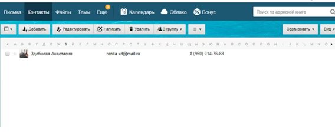
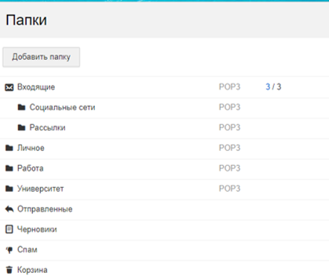
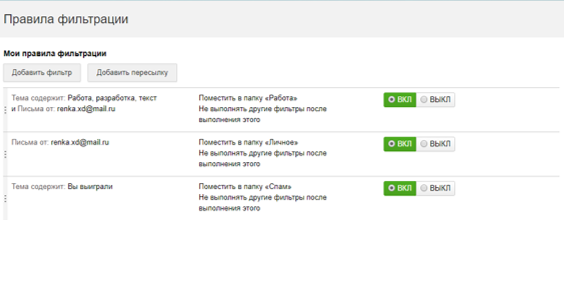
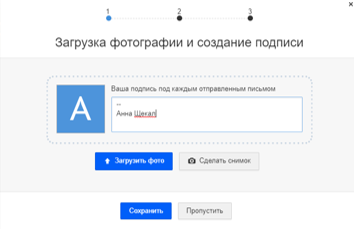
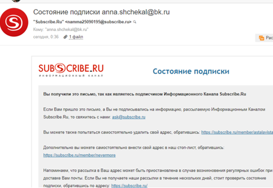
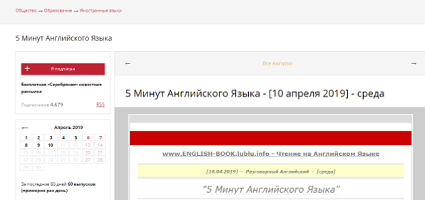
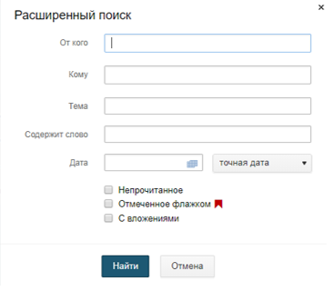

Домашняя страница
Создание почты:
Список серверов
Созданный почтовый ящик
anna.shchekal@bk.ru
Работа с почтой:
1) Добавила в адресную книгу контакт

2)Создала 3 папки для сортировки входящих сообщений

3)Составила 3 условия для фильтрации входящих писем

4)Создала подпись

5)Подписалась на рассылку


Характеристики почты mail.ru:
1) Начальный объём почтового ящика на Mail.Ru - 10 Гб.
Но его можно увеличивать неограниченное количество раз.
2) Есть возможность html форматирования
3) Возможности для поиска письма
4)Есть возможности фильтрации и пересылки письма на другой почтовый ящик или в папку спам. Есть автоответчик.

5)В Почте Mail.ru вы можете включить уведомления о новых письмах. Доступно два вида уведомлений: в браузере и во вкладке.
6)Журнал действий